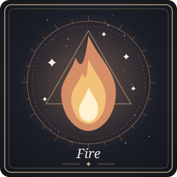
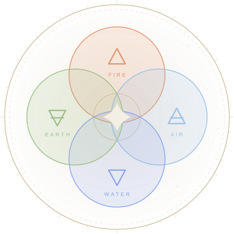
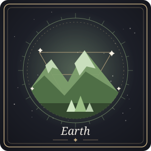
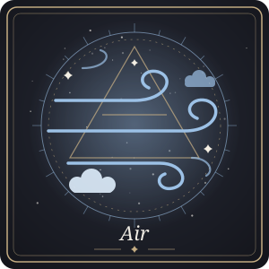
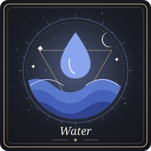

Fire
Aries · Leo · Sagittarius
Associated with energy, initiative, enthusiasm, and inspiration.
THE ART OF CONNECTION / 001
Explore traditional astrological connections through the four elements. Choose two signs to discover how their elements are often interpreted together.

A COSMIC COMBINATION
Your cosmic reading will appear here.
Astrological compatibility is a traditional interpretive framework and is intended here for entertainment and exploration, not as a scientific assessment of relationships.
In astrology, each zodiac sign belongs to one of four elements, each representing a different style of expression.

Aries · Leo · Sagittarius
Associated with energy, initiative, enthusiasm, and inspiration.

Taurus · Virgo · Capricorn
Associated with stability, practicality, patience, and structure.

Gemini · Libra · Aquarius
Associated with communication, ideas, curiosity, and connection.

Cancer · Scorpio · Pisces
Associated with emotion, intuition, sensitivity, and imagination.